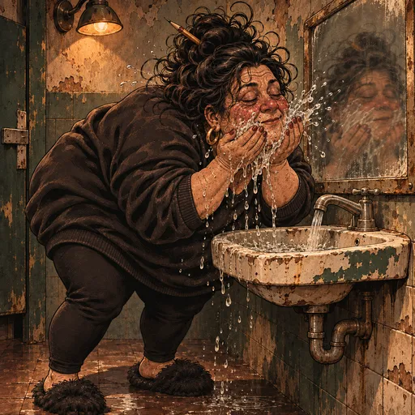
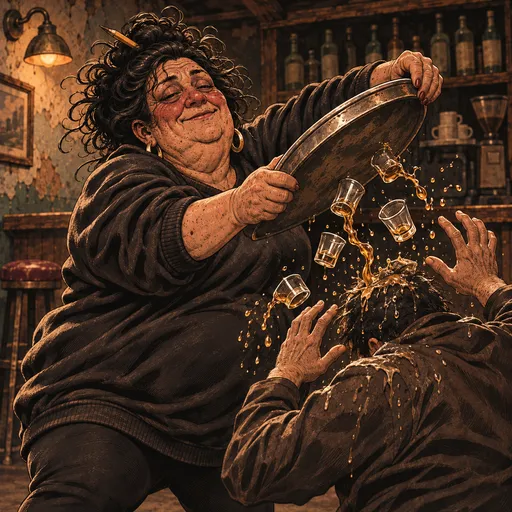

Dieci proposte iniziali, una generazione per carta, senza ritocchi. Giudizio del proprietario: In attesa. Registro · Prompt iniziali invariati. I campi non salvano automaticamente il testo.
Fino all'Ultima Goccia
base.pino.QuestoLoFiniscoIo · Versione 1
A 60 px
Bicchiere alla bocca e sagoma leggibili; punta della matita non distinguibile; seduta tonda senza schienale visibile.
La matita espone il terminale rosso con ghiera; la punta temperata richiesta non è visibile.
Posto Fisso
base.pino.bound.CinqueMinutiEVado · Versione 1
A 60 px
Cane sullo sgabello e cliente che si ritrae leggibili; punta della matita minuta; seduta tonda visibile, quattro zampe non separabili a 60 px.
Piera tiene un braccio davanti al busto e l’altro al bancone: non entrambi gli avambracci poggiano sul banco. Quattro zampe del cane presenti a piena risoluzione, una parzialmente nascosta.
Schiarirsi le Idee
base.pino.bound.Coccio · Versione 1

A 60 px
Mani al viso e lavandino leggibili; punta della matita minuta; nessuna seduta presente.
Riflesso sfocato presente; lo sdoppiamento è lieve e non leggibile a 60 px.
Ultimo Giro
base.pino.UltimoGiro · Versione 1

A 60 px
Vassoio inclinato e cliente chino leggibili; singoli bicchieri minuti; punta della matita minuta, seduta sul fondo poco distinta.
La seduta sul fondo è tagliata dal soggetto; nessuna seduta principale necessaria all’azione.
Scompenso da Ultimo Giro
base.pino.TestataDaUltimoGiro · Versione 1
A 60 px
Caduta e urto leggibili; bicchiere in volo minuto; punta della matita non distinguibile, seduta rovesciata senza schienale visibile.
Contatto sul viso/naso contro il torso anziché nettamente sulla fronte; avversario inclinato all’indietro anziché piegato in avanti. Matita con terminale rosso e punta nascosta.
Alla Goccia
base.pino.GoingBerserk · Versione 1
A 60 px
Colpo dall’alto e avversario piegato leggibili; bicchiere minuto; punta della matita minuta, seduta senza schienale sul fondo.
Nessuna ulteriore anomalia macroscopica osservata a piena risoluzione; dettagli minuti non verificabili a 60 px.
Avamposto Fortificato al Bancone
base.pino.IlBanconeRegge · Versione 1
A 60 px
Piera e bancone inclinato leggibili; presa e bicchierino minuti; punta della matita minuta, seduta tonda inclinata visibile.
Mano appoggiata al bordo anziché braccio chiaramente avvolto intorno al bancone; bicchierino sostanzialmente verticale.
Un Altro e Arrivo
base.pino.OffroIo · Versione 1
A 60 px
Indice alzato e due clienti in attesa leggibili; punta della matita minuta; seduta tonda senza schienale visibile.
Barman assente; Piera mostra il volto alla sala, la direzione del gesto verso il barman non è verificabile.
Rutto a Bruciapelo
base.pino.RuttoADistanzaSociale · Versione 1
A 60 px
Onda e avversario in volo leggibili; punta della matita minuta; seduta senza schienale visibile, cane sotto di essa, quattro zampe non verificabili.
Grappino si copre le orecchie; le zampe posteriori sono nascoste dalla posa, quindi non è verificabile l’appoggio di tutte e quattro. Cane separato dalle gambe di Piera.
Un Altro... Grappino...
base.pino.PrimaIlBrindisi · Versione 1
A 60 px
Brindisi e cane rivolto ai clienti leggibili; punta della matita minuta; seduta laterale senza schienale visibile, quattro zampe non separabili a 60 px.
Quattro zampe del cane presenti a piena risoluzione, una posteriore parzialmente coperta; il cane rimane separato dalle gambe di Piera. Schizzo del brindisi vicino al margine superiore.